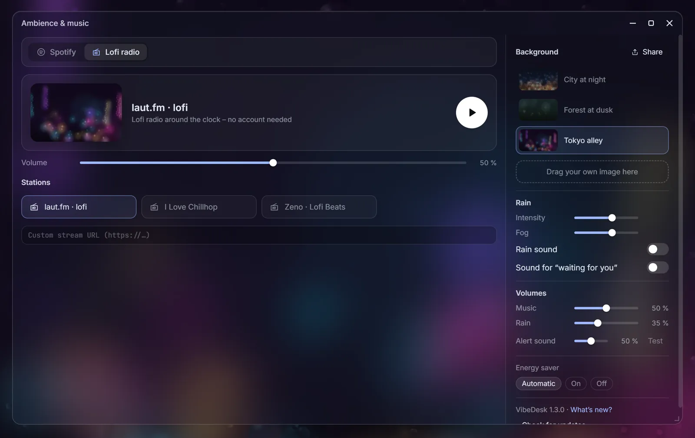
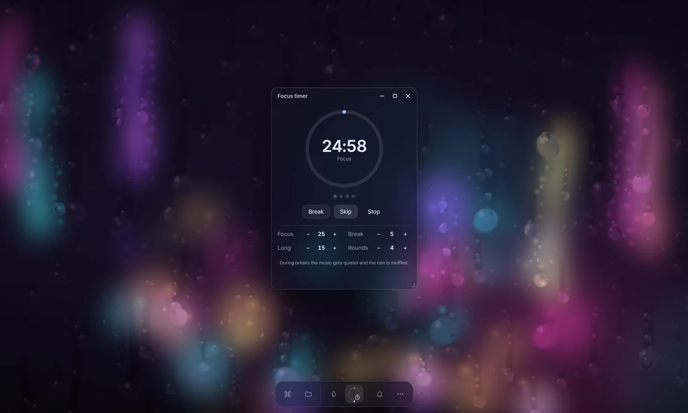

VibeDesk/Ambience & music
Rain on the window, music in your ears.
Long sessions with Claude feel less like a console when there is weather outside. VibeDesk brings rain scenes, a lofi radio, control over your own Spotify and a focus timer – all in one window.
Up next
Background
Rain
Illustration – track names are examples. Your own playlists appear in the real app.
Spotify
Your Spotify, without leaving the desk.
Connect your Spotify account once and control your Spotify app right from VibeDesk: your playlists, liked songs, search and the queue, plus play, pause, skip, seek and volume.
- Uses your own Spotify app ID – the window walks you through creating it in three steps.
- Playing and controlling music needs Spotify Premium.
- VibeDesk only talks to Spotify after you connect it.

Lofi radio
Or just press play.
No account, no setup: a lofi stream plays around the clock. Pick one of three stations or paste your own stream URL. Music, rain and the alert sound each have their own volume.
- Stations: laut.fm · lofi, I Love Chillhop and Zeno · Lofi Beats.
- A soft sound tells you when a session waits for you – if you want it.

Rain & scenes
Weather behind your windows.
Rain runs down the window in front of a city at night, a forest at dusk, a Tokyo alley – or a picture of your own, dragged into the window. Adjust intensity and fog, and add a synthetic rain sound.
- Drawn with WebGL at up to 30 frames per second; on battery the energy saver draws even less.
- Share your whole atmosphere as a code with friends.

Focus timer
Pomodoro rounds that turn the music down.
Focus 25, break 5, a long break after four rounds – or your own numbers. During breaks the music gets quieter and the rain is muffled. While a focus round runs, only important notifications come through.
Let Claude work.
Step in when it counts.
Free for Windows 10 and 11.